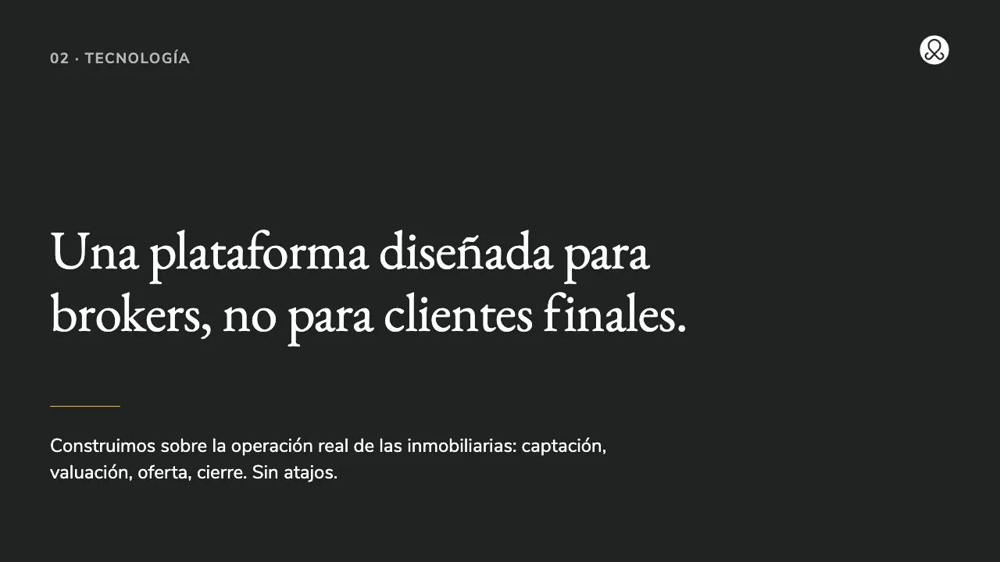
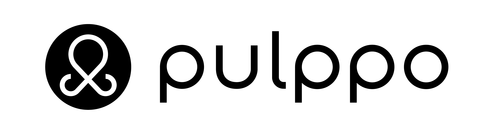
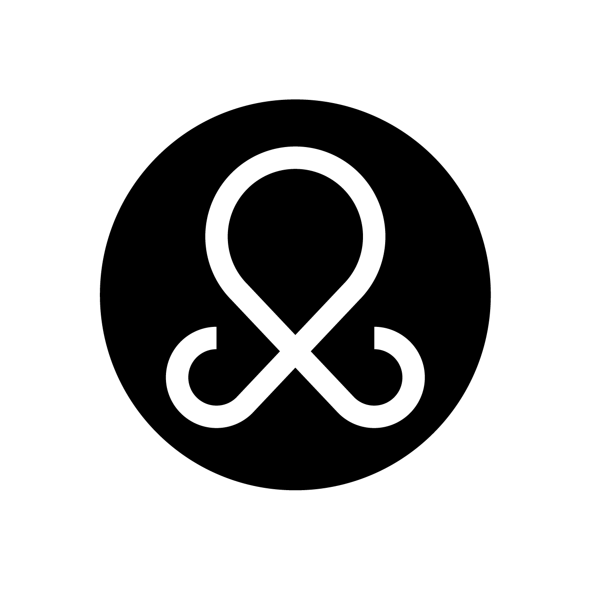
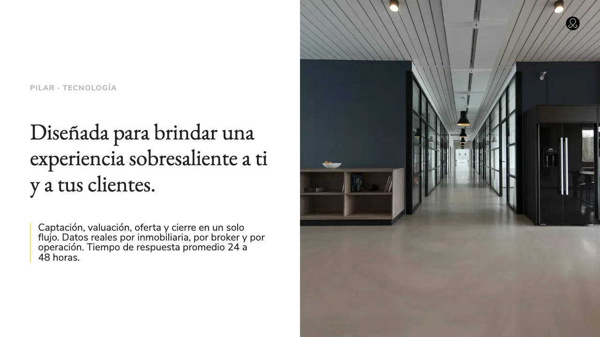
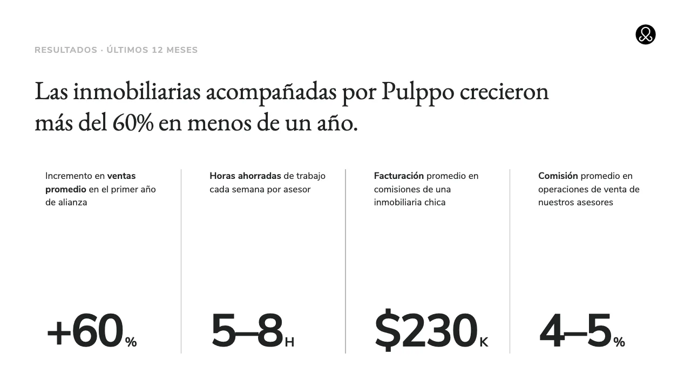
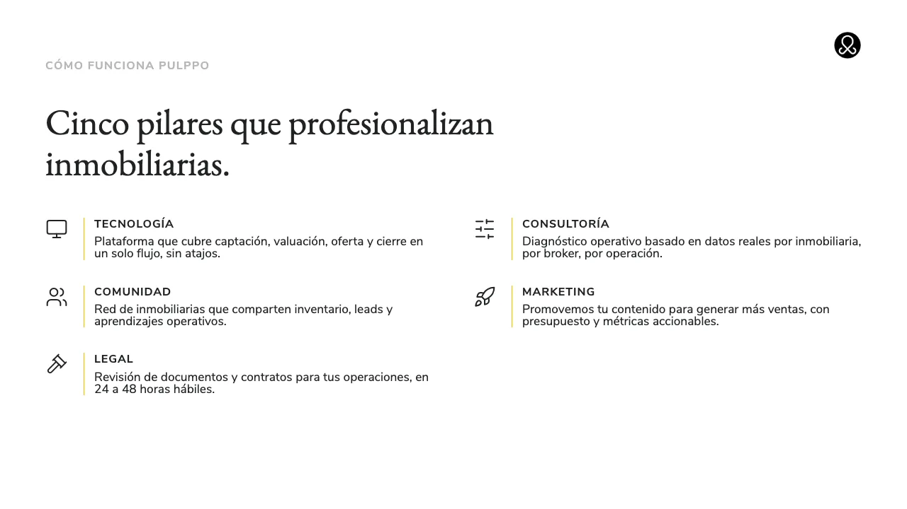
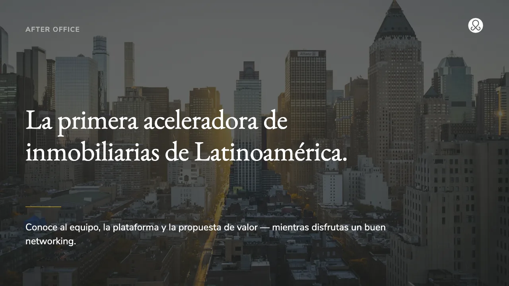
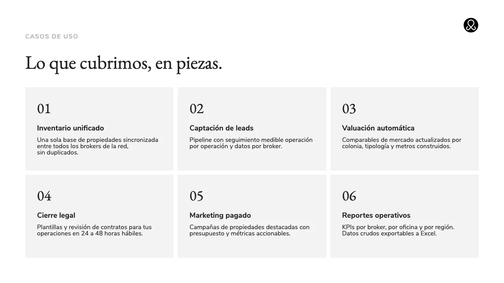
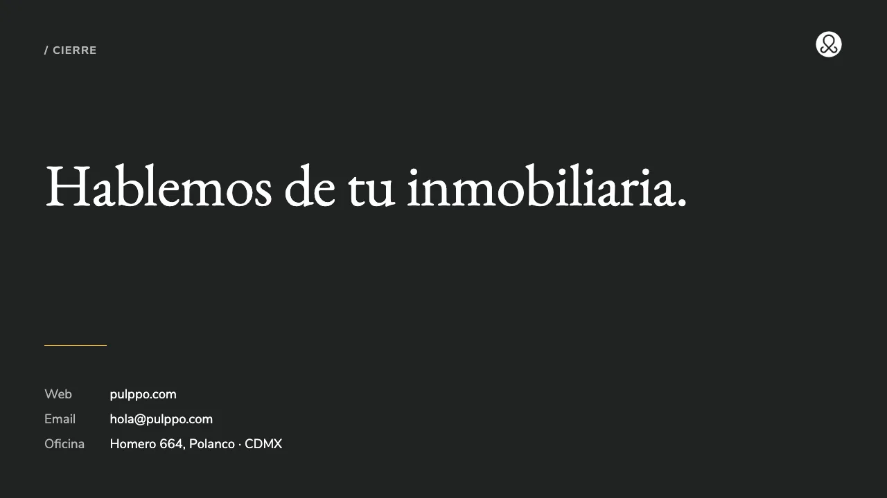

A
Section Divider

Apertura de sección. Fondo dark, título blanco, sin foto.
Abrir plantilla ↗
Brand Center · V1.0
Reglas, tokens y piezas reales para construir con Pulppo. Siete colores, dos tipografías y siete layouts. Sin excepciones.
00 · Índice
La guía completa, de la personalidad de la marca a los archivos descargables. Cada capítulo se lee solo y se puede compartir por ancla.
Qué es Pulppo y cómo habla.
02Variantes, tamaños y posición.
03Los siete colores oficiales.
04Heldane Text y Nunito Sans.
05Márgenes, gaps y divisores.
06Las siete plantillas oficiales.
07Una familia, sin color.
08Qué imágenes usa la marca.
09Cómo se escribe Pulppo.
10Tags, stats, cards y listas.
11Archivos para descargar.
01 · Fundamentos
Pulppo no vende real estate. Vende infraestructura para brokers: tecnología, comunidad, consultoría, marketing y legal.
Personalidad
No somos decorativos, emocionales ni juguetones. Somos densos en datos, austeros en forma y generosos en respiración. La jerarquía se construye con tamaño, peso, espacio y color. Nunca con profundidad.
Los cinco pilares
Tecnología
Diseñada para brindar una experiencia sobresaliente para ti y tus clientes.
Consultoría
Nos basamos en datos reales para potenciar tus resultados.
Comunidad
Creamos una red de confianza que te permite desarrollarte como profesional.
Marketing
Promovemos tu contenido para generar más ventas.
Legal
Revisamos contratos y operaciones para que cierres con respaldo.
Alcance
+640
MDP colocados en 12 meses
60%
Crecieron las inmobiliarias en menos de un año
24–48
Horas de tiempo de respuesta promedio
02
Mercados activos: México y Argentina
Cifras de las piezas oficiales de la marca.
Naming
02 · Identidad
Tres variantes: wordmark, lockup y símbolo. En negro sobre fondos claros, en blanco sobre fondos oscuros. Sin rotar, sin recolorear, sin efectos.
Versiones


Posición
Prohibido
03 · Identidad
Un solo negro, dos grises, un amarillo. El amarillo nunca pasa del 10% de la superficie. Rojo y verde solo cuando hay significado.
Paleta oficial
--color-soft-black
--color-white
--color-light-gray
--color-gray
--color-yellow
--color-sea-green
--color-red
Reglas
Línea de acento de 1pt, barra de gráfica o dato clave. Nunca como fondo principal ni en bloque.
Etapa ganadora o descarte, KPI positivo o negativo, error o éxito. Nunca decorativos.
De un color oficial a transparente. Nunca mezclar dos colores. La dirección se mantiene en toda la pieza.
Tokens semánticos
| Token | Valor | Uso |
|---|---|---|
--text-primary | #212322 | Texto principal |
--text-on-dark | #FFFFFF | Texto sobre fondos oscuros |
--text-secondary | #B7B7B7 | Captions y texto auxiliar |
--surface-default | #FFFFFF | Fondo base |
--surface-dark | #212322 | Divisores, cierres, overlays |
--surface-card | #F3F3F3 | Cards y áreas de descanso |
--accent | #F6BE00 | Líneas, datos clave, barras |
--divider-accent | #F6BE00 | Línea de acento de 1pt |
--divider-neutral | #B7B7B7 | Separadores y ejes |
--feedback-success | #529999 | Éxito y KPI positivo |
--feedback-error | #A52003 | Error, alerta y descarte |
--overlay-dark-70 | rgba(33,35,34,.7) | Overlay sobre fotografía |
Contraste: el gris #B7B7B7 no se usa como texto sobre blanco. En pantallas, el texto esencial va en soft black; el gris queda para divisores y para texto sobre fondo oscuro.
Do / Don't
Sí
La línea amarilla marca un dato. Un solo acento, 1pt.
No
El amarillo como fondo de un bloque compite con todo y rompe el límite del 10%.
04 · Identidad
Heldane Text Regular para títulos. Nunito Sans en tres pesos para todo lo demás. Si un título se ve débil, sube el tamaño.
Familias
Aa
Headings · Regular 400
Titulares, subtítulos y stats. Nunca bold, medium ni itálica. Fallback documentado: EB Garamond.
Aa
Body · Light 300 · Regular 400 · Bold 700
Párrafos, listas, captions y tags. Bold solo en tags UPPERCASE.
Escala
+640
Profesionalizamos inmobiliarias.
La plataforma para brokers.
Tecnología
Agrupamos a las mejores inmobiliarias y asesores para potenciar sus servicios.
Captación, valuación, oferta y cierre en un solo flujo.
Tecnología
Reglas de marca v1.0 · abril 2026
Los captions oficiales son grises. En una pantalla, el texto que necesita leerse usa soft black; el gris se reserva para notas y para fondos oscuros.
Uso
La fuente oficial
Este sitio no publica los archivos OTF. Si Heldane está instalada en tu equipo, la verás; si no, el navegador usa EB Garamond como fallback documentado. Para producir piezas finales, pide la fuente al equipo de marca.
Do / Don't
Sí
Si el título se ve débil, sube el tamaño.
No
Nunca lo pongas en bold.
05 · Fundamentos
Pulppo no usa una escala de 4 u 8 puntos. Usa valores fijos por contexto. El margen mínimo es de 0.5 pulgadas en todos los bordes; la foto a sangre es la única excepción.
Diagrama
Valores observados
| Contexto | Valor |
|---|---|
| Margen mínimo desde el borde | 0.5 in |
| Gap entre cards en Card Grid | 0.10 in |
| Logo símbolo en slide 16:9 | 0.5 × 0.5 in |
| Logo símbolo en otros formatos | 0.4 in desde arriba y derecha |
| Línea de acento amarilla | 1pt · largo sugerido 0.7 in |
| Divisor neutral | 1pt · 0.5pt en ejes de gráficas |
| Iconos en Icon List | 32px · stroke 1.5pt |
Divisores
Acento · 1pt amarillo
Neutral · 1pt gris
06 · Layouts
Cada pieza se asigna a uno de estos siete. Una idea por slide, excepto en infografías. Las plantillas están a 1280 × 720.

Apertura de sección. Fondo dark, título blanco, sin foto.
Abrir plantilla ↗
El más usado. Contenido a la izquierda, foto a la derecha.
Abrir plantilla ↗
De 3 a 5 cifras en fila, con divisores neutrales opcionales.
Abrir plantilla ↗
De 3 a 5 ítems con icono, tag y body.
Abrir plantilla ↗
Foto a sangre con overlay al 70% y título encima.
Abrir plantilla ↗
De 2×2 a 3×3. Cards en light gray, sin sombra.
Abrir plantilla ↗
Cierre de pieza. Título y CTA sobre fondo dark.
Abrir plantilla ↗07 · Fundamentos
Stroke de 1.5pt y 32px en Icon List. Sin color de marca, sin relleno, sin 3D. Si hay un icono, cumple una función.
Lucide · 32px · stroke 1.5
Reglas
Prohibido
08 · Fundamentos
Skylines, arquitectura corporativa y networking profesional. Tonos fríos y desaturados. Personas en gestos profesionales, no retratos emocionales.
Texto sobre fotografía · overlay 70%
Piezas reales
Sí
No
09 · Comunicación
Pulppo escribe como un consultor que respeta tu tiempo: da el dato, da el contexto en una línea y se calla.
Cómo se escribe
| No suena Pulppo | Sí suena Pulppo |
|---|---|
| Revolucionamos el real estate. | Profesionalizamos inmobiliarias con tecnología. |
| Transformamos vidas con IA. | Duplicamos las ventas en un año. |
| Unlock your potential. | +640 MDP colocados en 12 meses. |
| Agentes y vendedores. | Brokers, asesores inmobiliarios, inmobiliarias. |
| La app. | La plataforma, el sistema. |
| Frases largas con subordinadas. | Frases cortas. Sujeto + verbo + objeto. |
Casing
Tono
Antes / Después
Antes
“Cómo Liderar Una Inmobiliaria Que Genera Sus Propios Clientes”
Después
“Cómo liderar una inmobiliaria que genera sus propios clientes.”
10 · Sistema
Tag, stat, card, icon list item y divisores. Todos usan tokens semánticos. Sin sombra, sin borde por defecto, sin radio.
Tag / Eyebrow
Tecnología
Nunito Sans Bold 11pt, UPPERCASE. Es solo texto: sin fondo, sin borde.
Stat Row
+640
MDP colocados
60%
Crecimiento
24–48
Horas
Número en Heldane Regular con el token de stat. Caption en Nunito Sans.
Card
Diseñada para brindar una experiencia sobresaliente para ti y tus clientes.
Fondo light gray, esquinas vivas, sin sombra. Si necesita borde, 1pt gray.
Icon List Item
Comunidad
Creamos una red de confianza que te permite desarrollarte como profesional.
Icono de 32px, tag encima y body de una o dos líneas.
Divisores
Acento amarillo · 1pt · largo sugerido 0.7 in
Divisor neutral · 1pt gray
Tokens en código
<link rel="stylesheet" href="colors_and_type.css">
<p class="tag">Tecnología</p>
<h2 class="h2">La plataforma para brokers.</h2>
<p class="body">Datos reales por inmobiliaria.</p>
/* o directamente */
color: var(--text-primary);
background: var(--surface-card);
border-bottom: 1pt solid var(--divider-neutral);Checklist de pieza
11 · Recursos
Logos en PNG, tokens en CSS y las siete plantillas de 1280 × 720. Heldane Text se licencia por separado y no se distribuye aquí.
Logos
Código
Fuentes
Cómo usar los tokens
Enlaza colors_and_type.css y usa las variables semánticas: --text-primary, --surface-card, --accent. No redefinas los primitivos ni agregues colores nuevos.